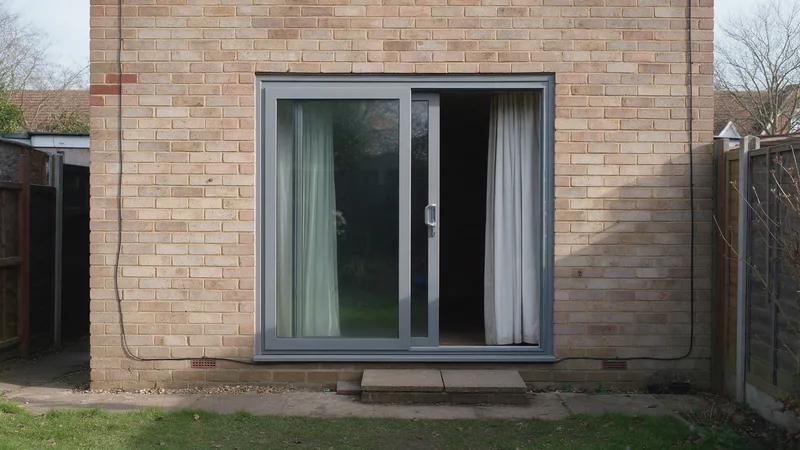

Generated photoGenerated for this demo. Not a photograph of a real job.
The wrong question first
Most people start with which looks best, and both of them look good in a photograph taken in June with nobody in the room. The question that actually decides it is this: for the other eleven months, are you looking through these doors or walking through them?
Bifolds are for walking through. They fold back on themselves and stack to one side, and you get nearly the whole opening clear. Sliders are for looking through. One leaf passes behind the other, so half the opening opens, and when they are shut you have fewer frames in the way of the view.
Bifolds, plainly
What is good: the opening really does open, fully, and on a warm day the room and the garden become one space. Nothing swings out into the garden or in to the room.
What people do not think about: the stack has to live somewhere. Folded back, the leaves sit in a bundle at one end, and that bundle is in front of a chunk of your wall, inside or out depending on which way they fold. In a small room that is the bit of wall where the sofa or the table was going. There are also more frames in the view when they are shut, because every leaf has an upright each side.
What they ask of you: level tracks, a solid floor and the rollers adjusting now and then. More moving parts means more to keep clean and more to go out of adjustment, particularly if the frame was not packed and levelled properly on day one.
Sliders, plainly
What is good: the clean view. Two big panes of glass, one slim meeting point, nothing sticking out anywhere when they are open. In a small room they are the easier thing to live with, because the leaf that opens disappears behind the one that does not.
What people do not think about: you only ever get half the opening, or a third on a three panel. If the whole point of the job is to throw the back of the house open, that will annoy you.
What they ask of you: brushing the bottom track out, especially in autumn when leaves and grit get in. That is about it.
And french doors
Often the right answer and rarely the one people ask for. On a narrower opening, a pair of doors that open out gives you a bigger clear gap than a slider in the same hole, and the frames are slimmer and cheaper than a bifold. The catch is that they swing, so they want space in front of them, and wind catches them if there is nothing to hold them back.
The things that decide it on site
- What is over the opening. Big doors are heavy and the lintel has to carry them. On a new opening that is a builder's job to settle before anything is ordered.
- The threshold. A flush threshold with no step looks and feels better, and it needs drainage planned underneath it. A small upstand that keeps water out beats a level one that does not.
- Which way the weather comes. A big west facing opening takes a hammering. It changes nothing about which doors you pick, and everything about how carefully they get fitted and sealed.
- How you actually use the room. If the garden gets used once a week and looked at every day, you want the view. If the kids and the dog are in and out all summer, you want the opening.
What we would say on the doorstep
Bifolds if you have the wall for the stack and you genuinely want the whole thing open. Sliders if the room is on the smaller side, if the view matters more than the opening, or if you want the least to go wrong. French doors if the opening is narrow and nobody has mentioned them yet.
Whichever it is, the fitting matters more than the badge. A mid range door levelled, packed and sealed properly will be quieter and tighter in ten years than an expensive one wedged in with offcuts.
Written for this demo from general trade knowledge. It is not advice on your house, and it is no substitute for somebody having a look at it.
More advice
While you are here.
 Generated photo
Generated photoMisted windows: new glass or new frames?
Cloudy glass almost never means you need new windows. Here is how to tell which half of the window has actually failed.
 Generated photo
Generated photoWhat happens on fitting day
What gets moved, how much mess there is, how long the hole in your wall is open, and the five minutes of preparation that help most.
Want somebody to look at the actual window?
Tell us what you are looking at and your postcode and we will book a survey. Five minutes at the window beats any article.